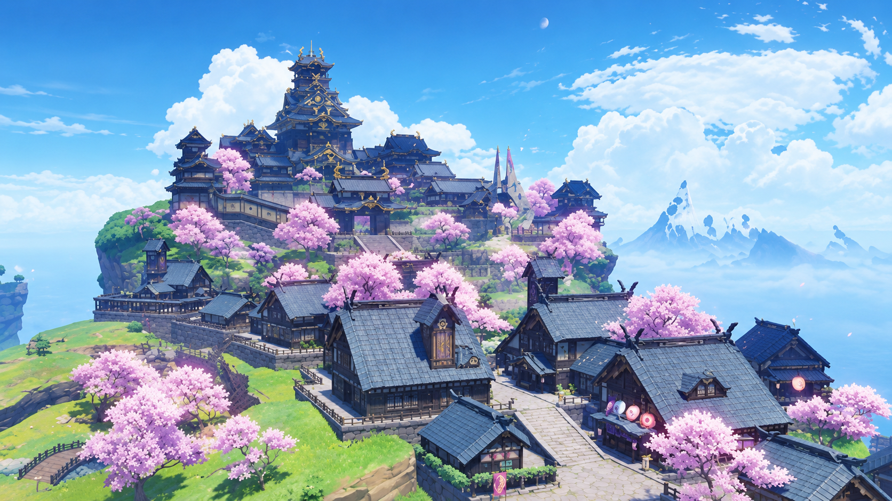

Inazuma: The Realm of Eternal Thunder
Discover a culturally rich archipelago featuring striking purple foliage, traditional shrines, and serene coastal views.

Traveler's Journal
An island nation east across the sea, wrapped in mist and known for keeping its own customs closely. Inazuma's shrines, torii gates, and seasonal cherry blossoms give the archipelago a quiet, ceremonial character, even in its busiest trading ports.
What's Included
Well-suited to culture-focused travelers and groups of 4–6.
- Duration: 4 Days / 3 Nights
- Package Code: INAZ-03
- Covers: Guided stops, local transfers, traditional tea ceremony, shrine pilgrimage guide
- Not Included: Airfare, personal expenses, travel insurance
Highlights of the Inazuma Route
Day-by-Day Outline
-
Arrival & Ritou Port
Check-in and an afternoon exploring Ritou Trading Port's markets and street food scene.
Night 1 Street Food After Dark An evening back at Ritou Trading Port, when the food stalls light up and the harbor quiets down.
-
Narukami Shrine Pilgrimage
Full-day guided visit to the Grand Shrine, including the torii-lined stairway and a
traditional tea ceremony.
Night 2 Lantern-Lit Shrine Grounds A short evening walk near the shrine grounds, lit by lanterns once the daytime crowds have left.
-
Tenshukaku Keep Visit
Daytime visit to Tenshukaku, Inazuma's iconic keep, taking in the tiered architecture up
close.
Night 3 Sunset Harbor Viewing A sunset harbor viewing session as the keep lights up, a signature moment of the tour.
- Leisure & Departure Free morning for optional shopping before transfer to departure point.
Inazuma Package FAQs
Is this date available for a group of 4?
Availability is confirmed on a per-batch basis; please send your preferred travel dates through Messenger, SMS, or email and we will confirm within 24 hours.
Is the tea ceremony included in the base price?
Yes, the traditional tea ceremony at Narukami Island Grand Shrine is included in the Day 2 itinerary at no extra cost.
What should I pack for this tour?
Comfortable walking shoes are recommended, as the shrine pilgrimage involves an extended uphill stairway.
Ready to Explore Inazuma?
Send us your preferred dates and group size through Messenger, SMS, or email, and we'll confirm availability within 24 hours.
Contact Teyvat Travel Services